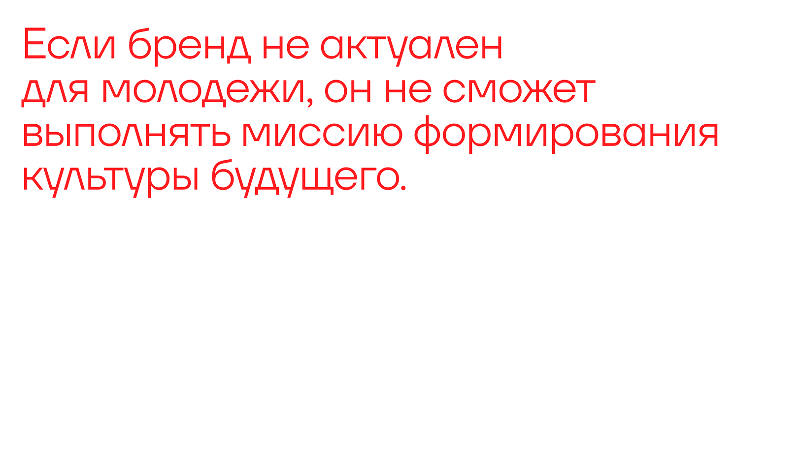
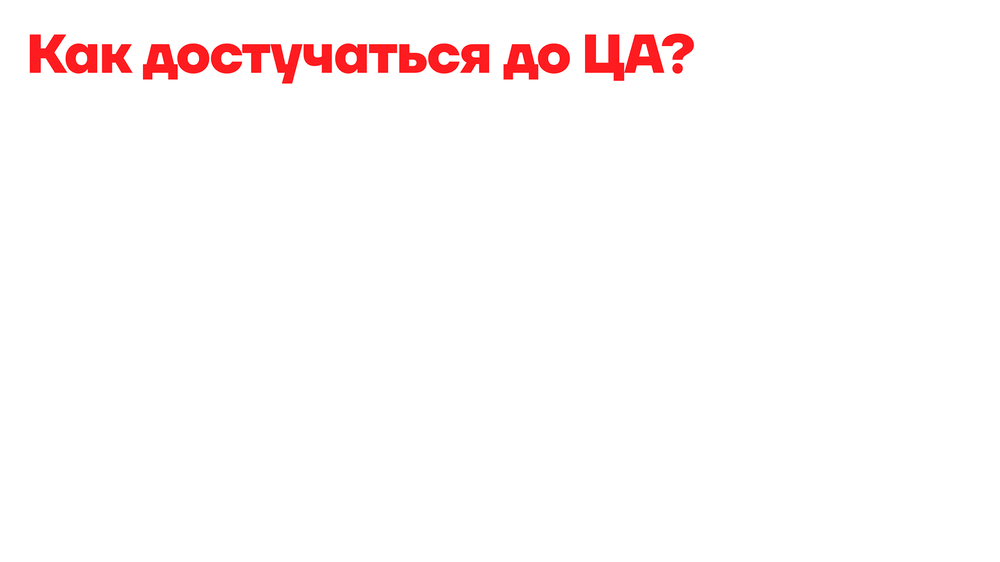
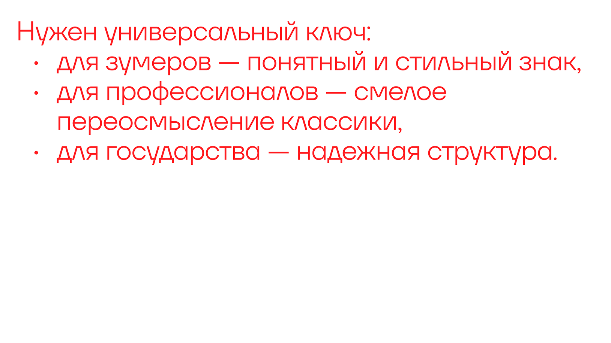
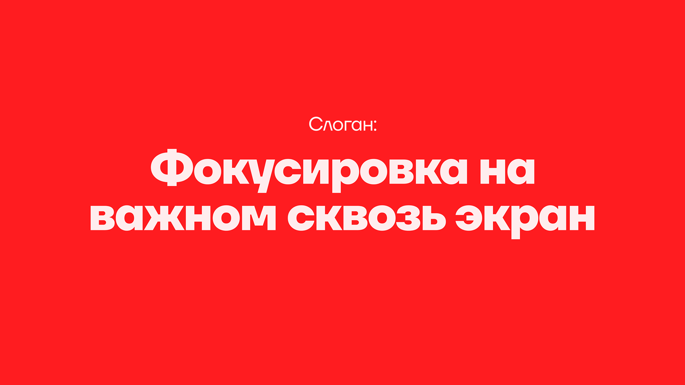

Portrait / image
Съемка человека, силуэта и персонального образа для портфолио, бренда или кампейна.
portfolio / photography
Фотография как часть образа бренда: свет, композиция, атмосфера и точное чувство кадра. Здесь будут съемки, серии и визуальные исследования.
Съемка человека, силуэта и персонального образа для портфолио, бренда или кампейна.
Вещи, детали, фактуры и предметы с фокусом на материал и коммерческую подачу.
Визуальные исследования, которые помогают найти тон будущей айдентики, съемки или дропа.



